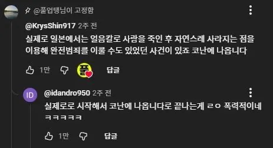

코난은 실화 맞지 ㅇㅇ

코난은 실화 맞지 ㅇㅇ
만해 빙륜환
스탈린 최대 라이벌 트로츠키가 얼음송곳으로 암살됐다고하지
정확히는 얼음 깨는 피켈이었을 걸
그.. 얼음송곳은...
얼음으로 만든 송곳이 아니라 얼음을 깨는 송곳임
ice pick을 냅다 직역해서 얼음송곳으로 번역하는 바람에..
마피아들이 자주 쓰는거라고 들었음. 처형할때 쓰던가?
병건아.. 코난은 없는거야
찹쌀칼 생각난다
수건 돌돌 말아서 물에 적신 다음에 얼려서 둔기로 쓰는 것도 있었지
성이 폰씨인 사람도 있자나
인터넷에서 확인됐음
실제로는 상처에 동상같은게 남지않을까
코난이 없는거야?
코난세계 아이돌인 요코란 가수의 전남친이
얼음으로 자살하고 칼 녹여서 살인처럼
보이게했던거 같음